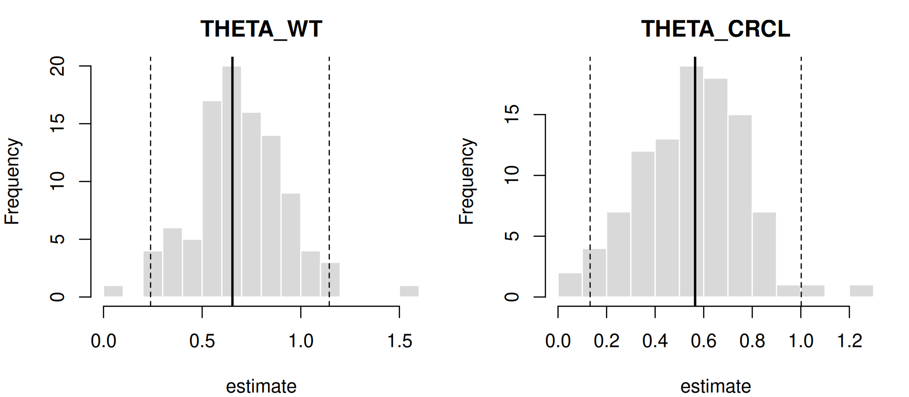
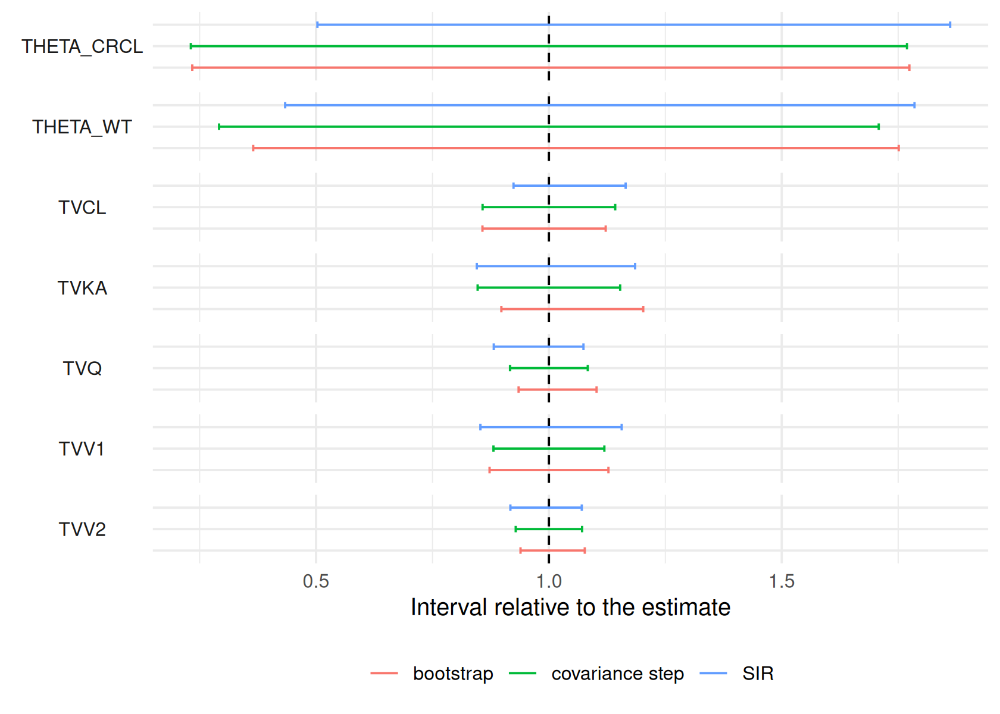

DATA → MODEL → ESTIMATE ⇄ EVALUATE → SIMULATE → REPORT
Parameter uncertainty
Where you are
Model development and selection selected the covariate model two_cpt_oral_cov. Before reporting its estimates or simulating from it, quantify how precisely they are known. ferx offers four routes:
- the covariance step: asymptotic standard errors from the curvature of the objective function;
- SIR: sampling importance resampling around that asymptotic distribution;
- the bootstrap: refitting the model to resampled datasets;
- Bayesian estimation: posterior intervals.
This chapter applies each to the covariate model and compares the intervals.
The data
cov <- ferx_example("two_cpt_oral_cov")
fit <- ferx_fit(cov$model, cov$data, verbose = FALSE)Minimal runnable call: the covariance step
The covariance step runs by default (covariance = TRUE in this model file). Its results are the se, rse_pct and 95% interval columns of fit$estimates:
fit$covariance_status
#> [1] "computed"
fit$estimates[, c("estimate", "se", "rse_pct", "lower_95", "upper_95")]
#> estimate se rse_pct lower_95 upper_95
#> TVCL 4.94779587 0.359479681 7.265451 4.24321569 5.65237604
#> TVV1 48.58746510 2.952179029 6.076010 42.80119420 54.37373599
#> TVQ 9.57692867 0.407841896 4.258588 8.77755856 10.37629879
#> TVV2 94.17330801 3.423849490 3.635690 87.46256301 100.88405301
#> TVKA 1.25592751 0.098051230 7.807077 1.06374710 1.44810792
#> THETA_WT 0.65345631 0.236131062 36.135708 0.19063943 1.11627319
#> THETA_CRCL 0.56461277 0.221501060 39.230615 0.13047069 0.99875484
#> ETA_CL 0.10753130 0.028096449 26.128623 0.05246226 0.16260034
#> ETA_V1 0.10634759 0.028678257 26.966531 0.05013821 0.16255698
#> ETA_Q 0.05124930 0.014007561 27.332201 0.02379448 0.07870412
#> ETA_V2 0.03793979 0.010328799 27.224185 0.01769535 0.05818424
#> ETA_KA 0.17543720 0.048574865 27.687893 0.08023046 0.27064393
#> PROP_ERR 0.01961856 0.001123479 5.726613 0.01741654 0.02182058The full variance-covariance matrix of the estimates is fit$cov_matrix, and its correlation form is fit$cor_matrix (Diagnosing the model).
Choosing the covariance estimator
book_settings_table(c("covariance_method", "covariance_fallback", "analytic_cov_hessian",
"cov_inner_tol", "fd_hessian_step"))| Setting | Values | Default | Description |
|---|---|---|---|
covariance_method |
r, s, rsr
|
r |
See ?ferx_fit and the ferx-core fit options page. |
covariance_fallback |
none, sir
|
none |
What to do when the covariance Hessian is non-PD, whether R is analytic or finite-difference. |
analytic_cov_hessian |
true, false
|
true |
Use the exact analytic R-matrix for the covariance step when the model is in scope, instead of the finite-difference-of-OFV Hessian. |
cov_inner_tol |
float |
inner_tol (LTBS: min(inner_tol, 1e-8)) |
Inner EBE-reconvergence tolerance used only by the covariance step, decoupled from inner_tol. |
fd_hessian_step |
float | 1e-2 |
Initial relative step size for the finite-difference Hessian used in the covariance step. |
fd_hessian_step is also a dedicated ferx_fit() argument. ferx_covariance() runs the covariance step on an existing fit: to add standard errors to a fit made without them, or to try another estimator without re-estimating. It takes the fitted model as fit, re-reads the model and data files, and stops if they changed since the fit:
fit_nocov <- ferx_fit(cov$model, cov$data, covariance = FALSE, verbose = FALSE)
#> Warning: Model file [fit_options] sets `covariance = true` but ferx_fit()
#> argument overrides it with `false`. The call-time value will be used.
se_by_method <- sapply(c(r = "r", s = "s", rsr = "rsr"), function(m) {
ferx_covariance(fit_nocov, covariance_method = m)$se_theta
})
round(se_by_method, 4)
#> r s rsr
#> TVCL 0.3595 0.3819 0.4216
#> TVV1 2.9522 4.5246 2.8639
#> TVQ 0.4078 0.6359 0.3967
#> TVV2 3.4238 4.7218 3.3730
#> TVKA 0.0981 0.1320 0.0954
#> THETA_WT 0.2361 0.2322 0.3255
#> THETA_CRCL 0.2215 0.3284 0.2159"r" (inverse Hessian, the default) reproduces the inline standard errors, "s" is the inverse cross-product and "rsr" the sandwich estimator. ferx_covariance() also takes mu_referencing (match the original fit) and verbose.
SIR
SIR draws parameter vectors from the asymptotic distribution, weights them by how well they fit the data, and resamples according to the weights. The resampled vectors give intervals that need not be symmetric. Run it inline with ferx_fit(sir = TRUE), or afterwards with ferx_sir(), which takes the fitted model as fit:
fit_sir <- ferx_sir(fit, sir_samples = 1000, sir_resamples = 250)
fit_sir$sir_ess
#> [1] 139.1451
fit_sir$sir_ci_theta
#> lower upper
#> TVCL 4.5718176 5.763030
#> TVV1 41.4399336 56.180391
#> TVQ 8.4433396 10.287684
#> TVV2 86.3826286 100.823310
#> TVKA 1.0614647 1.488455
#> THETA_WT 0.2833786 1.166469
#> THETA_CRCL 0.2839566 1.051120sir_ci_omega and sir_ci_sigma hold the intervals for the variances and residual error. sir_ess is the effective sample size of the resampled set; the closer it is to sir_resamples, the better the proposal matches the data. sir_keep_samples = TRUE keeps the resampled vectors on the fit, which ferx_simulate_with_uncertainty() needs (Simulating scenarios). verbose = TRUE prints progress.
book_settings_table(c("sir_samples", "sir_resamples", "sir_seed", "sir_keep_samples", "sir_df"))| Setting | Values | Default | Description |
|---|---|---|---|
sir_samples |
1000 |
Number of proposal samples (M) | |
sir_resamples |
250 |
Number of resampled vectors (m) | |
sir_seed |
12345 |
RNG seed for reproducibility | |
sir_keep_samples |
false |
Retain resampled parameter vectors for simulate_with_uncertainty()
|
|
sir_df |
5.0 |
Degrees of freedom for the Student-t proposal; higher values approach a normal proposal |
The effective sample size depends strongly on the random seed:
Check sir_ess on every run. When it is low, increase sir_samples and confirm that the intervals are stable across seeds before using them.
Bootstrap
ferx_bootstrap() resamples whole subjects with replacement, refits the model to each replicate and summarises the spread of the estimates. It needs the model and data rather than a fit, because every replicate is a new fit. With a directory it writes its tables to disk, so a run can be re-summarised or resumed later:
boot_dir <- book_tempdir("bootstrap")
boot <- ferx_bootstrap(cov$model, cov$data, samples = 100, seed = 1, directory = boot_dir)
boot
#> ferx bootstrap
#> Model: /home/runner/work/_temp/Library/ferx/examples/models/two_cpt_oral_cov.ferx
#> Data: /home/runner/work/_temp/Library/ferx/examples/data/two_cpt_oral_cov.csv
#> Samples: 100 completed of 100 requested; 96 included
#> excluded 1: estimate near boundary
#> excluded 3: minimization terminated
#> Wrote: /tmp/RtmpdmEuQF/bootstrap
#>
#> 95% confidence intervals (percentile / normal approximation):
#> parameter original mean bias standard_error median
#> TVCL 4.94800 4.94700 -0.0008091 0.2960000 4.97300
#> TVV1 48.59000 48.71000 0.1265000 2.8520000 48.75000
#> TVQ 9.57700 9.54800 -0.0290400 0.3984000 9.53700
#> TVV2 94.17000 94.64000 0.4632000 3.2470000 94.99000
#> TVKA 1.25600 1.26400 0.0082320 0.0894700 1.25300
#> THETA_WT 0.65350 0.69330 0.0398100 0.2338000 0.67900
#> THETA_CRCL 0.56460 0.55550 -0.0090700 0.2119000 0.54190
#> OMEGA(ETA_CL,ETA_CL) 0.10750 0.10000 -0.0075130 0.0246800 0.09761
#> OMEGA(ETA_V1,ETA_V1) 0.10630 0.09839 -0.0079560 0.0298000 0.09374
#> OMEGA(ETA_Q,ETA_Q) 0.05125 0.04872 -0.0025250 0.0147400 0.04855
#> OMEGA(ETA_V2,ETA_V2) 0.03794 0.03857 0.0006253 0.0100600 0.03828
#> OMEGA(ETA_KA,ETA_KA) 0.17540 0.16830 -0.0071040 0.0589800 0.16000
#> PROP_ERR 0.01962 0.01948 -0.0001430 0.0009443 0.01951
#> ci_lower ci_upper ci_lower_normal ci_upper_normal
#> 4.24200 5.55100 4.36800 5.52800
#> 42.40000 54.80000 43.00000 54.18000
#> 8.95400 10.56000 8.79600 10.36000
#> 88.43000 101.40000 87.81000 100.50000
#> 1.12800 1.51000 1.08100 1.43100
#> 0.23850 1.14400 0.19520 1.11200
#> 0.13220 1.00200 0.14940 0.97990
#> 0.06054 0.15790 0.05917 0.15590
#> 0.05669 0.16720 0.04793 0.16480
#> 0.02403 0.08200 0.02236 0.08014
#> 0.01733 0.05806 0.01821 0.05766
#> 0.07201 0.30790 0.05985 0.29100
#> 0.01736 0.02139 0.01777 0.02147print() on the ferx_bootstrap result shows the run summary and the boot$parameters table: original estimate, bootstrap mean, bias, standard error, median, and the percentile and normal-approximation intervals. boot$raw has one row per fitted replicate, and boot$diagnostics records the counts and exclusions:
boot$diagnostics
#> statistic value
#> 1 samples_requested 100.000000
#> 2 samples_completed 100.000000
#> 3 samples_included 96.000000
#> 4 chi_square_df 13.000000
#> 5 excluded: estimate near boundary 1.000000
#> 6 excluded: minimization terminated 3.000000
#> 7 mean: minimization_successful 0.970000
#> 8 mean: estimate_near_boundary 0.010000
#> 9 mean: covariance_step_successful 0.000000
#> 10 mean: covariance_step_warnings 0.000000
#> 11 mean: ofv -1213.282042
#> 12 mean: subproblem_est_time 1.242285By default, replicates whose minimization terminated or whose estimate lies on a boundary are fitted but excluded from the statistics. plot() on a ferx_bootstrap object draws one histogram per parameter, with the original estimate and the interval:

ferx_bootstrap_summarize() recomputes the statistics from the run directory under different exclusion criteria or a different ci level, without refitting:
relaxed <- ferx_bootstrap_summarize(boot_dir, skip_estimate_near_boundary = FALSE, ci = 90)
relaxed$n_included
#> [1] 97
head(relaxed$parameters[, c("parameter", "ci_lower", "ci_upper")], 7)
#> parameter ci_lower ci_upper
#> 1 TVCL 4.3922034 5.455515
#> 2 TVV1 43.7777937 53.194542
#> 3 TVQ 8.9953717 10.291399
#> 4 TVV2 89.4531726 100.678700
#> 5 TVKA 1.1386823 1.442725
#> 6 THETA_WT 0.2963447 1.069042
#> 7 THETA_CRCL 0.1761630 0.892184ferx_bootstrap() arguments:
| Argument | Default | Meaning |
|---|---|---|
model, data
|
— | Model and dataset (data = NULL uses [data]) |
samples |
200 | Number of bootstrap datasets |
seed |
1 | Master seed; results do not depend on threads
|
threads |
NULL |
Replicates fitted concurrently |
stratify_on |
NULL |
Column defining resampling strata |
sample_size |
NULL |
Subjects per replicate (a named vector gives counts per stratum) |
update_inits |
TRUE |
Start each replicate from the original fit’s estimates |
run_base_model |
TRUE |
Fit the original dataset first (needed for bias and update_inits) |
keep_covariance |
FALSE |
Run the covariance step per replicate |
dofv |
FALSE |
Evaluate each replicate’s estimates on the original data (about doubles the run time) |
skip_minimization_terminated |
TRUE |
Exclude replicates whose minimization terminated |
skip_estimate_near_boundary |
TRUE |
Exclude replicates with an estimate on a boundary |
skip_covariance_step_terminated, skip_with_covstep_warnings
|
FALSE |
Exclude on the per-replicate covariance step (needs keep_covariance = TRUE) |
ci |
95 | Confidence level in percent |
directory |
NULL |
Where to write the run; NULL keeps it in memory |
resume, retry_failed
|
FALSE |
Continue an interrupted run in directory, optionally refitting failed replicates |
progress, verbose
|
— | Progress bar (interactive sessions) and a run header |
ferx_bootstrap_summarize() takes the run directory plus the four skip_* filters and ci.
Bayesian estimation
method = "bayes" returns posterior summaries instead of a covariance step (Estimation methods and controlling the fit). Posterior intervals are only meaningful when the chains have converged:
fit_bayes <- ferx_fit(cov$model, cov$data, method = "bayes", verbose = FALSE)
#> Warning: Model file [fit_options] sets `method = focei` but ferx_fit() argument
#> overrides it with `bayes`. The call-time value will be used.
c(converged = fit_bayes$converged, max_rhat = fit_bayes$bayes$max_rhat)
#> converged max_rhat
#> 0.000000 2.735054On this model the default run has not converged (R-hat far above 1.01), so its intervals are not used below.
Comparing the intervals
thetas <- names(fit$theta)
intervals <- bind_rows(
data.frame(method = "covariance step", parameter = thetas,
lower = fit$estimates[thetas, "lower_95"], upper = fit$estimates[thetas, "upper_95"]),
data.frame(method = "SIR", parameter = thetas,
lower = fit_sir$sir_ci_theta[thetas, "lower"], upper = fit_sir$sir_ci_theta[thetas, "upper"]),
data.frame(method = "bootstrap", parameter = thetas,
lower = boot$parameters$ci_lower[match(thetas, boot$parameters$parameter)],
upper = boot$parameters$ci_upper[match(thetas, boot$parameters$parameter)])
) |>
left_join(data.frame(parameter = thetas, estimate = fit$theta), by = "parameter") |>
mutate(lower_rel = lower / estimate, upper_rel = upper / estimate)
ggplot(intervals, aes(y = method, xmin = lower_rel, xmax = upper_rel, colour = method)) +
geom_vline(xintercept = 1, linetype = "dashed") +
geom_errorbarh(height = 0.3) +
facet_wrap(~parameter, ncol = 1, strip.position = "left") +
labs(x = "Interval relative to the estimate", y = NULL) +
labs(colour = NULL) +
theme(legend.position = "bottom", strip.text.y.left = element_text(angle = 0),
axis.text.y = element_blank())
#> Warning: `geom_errorbarh()` was deprecated in ggplot2 4.0.0.
#> ℹ Please use the `orientation` argument of `geom_errorbar()` instead.
#> `height` was translated to `width`.
The structural parameters are precisely estimated by every route. The covariate exponents THETA_WT and THETA_CRCL have wide intervals, and the three routes differ in how wide. For a small dataset like this one, report the method you used and, where it matters, check that the conclusions hold under a second method.
Pitfalls
An unreliable covariance step. A fit can report standard errors that should not be trusted. The fit from NCA-based starting values in Initial estimates and a first fit is an example: its covariance matrix had to be regularised.
base <- ferx_example("two_cpt_oral_base")
fit_bad <- ferx_fit(base$model, base$data, inits_from_nca = TRUE, verbose = FALSE)
w_bad <- ferx_get_warnings(fit_bad, as_df = TRUE)
w_bad[w_bad$category %in% c("covariance_regularized", "condition_number"), c("severity", "category")]
#> severity category
#> 2 warning covariance_regularized
#> 6 critical condition_numberIn such a case, fix the model before quantifying uncertainty. covariance_fallback = "sir" runs SIR automatically when the covariance step fails.
Other points:
-
ferx_sir()andferx_covariance()check that the model and data files are unchanged since the fit, and stop otherwise. - A bootstrap is
samplescomplete fits. Setdirectoryfor long runs, so an interrupted run can be resumed and re-summarised. - Bayesian intervals require converged chains. Check
fit$bayes$rhatand the effective sample sizes.
Warnings you may see here
See convergence and covariance warnings and resampling warnings.
-
covariance_step(info): a note on the covariance step, for example its cost. -
covariance_failed(critical): the covariance step failed and there are no standard errors. Usecovariance_fallback = "sir"or refit with different starting values. -
covariance_regularized(warning): the step succeeded but was regularised, so the standard errors may be optimistic. Inspect the eigenvalues or use SIR or bootstrap intervals. -
sir(warning): SIR failed or was requested without a covariance matrix, or its proposal did not cover some directions (named in the message).
Summary
- The covariance step gives asymptotic standard errors in
fit$estimates.ferx_covariance()reruns it with another estimator. -
ferx_sir()(orsir = TRUE) gives resampling intervals. Checksir_ess. -
ferx_bootstrap()refits resampled datasets.ferx_bootstrap_summarize()andplot()work on its results. - Compare routes for poorly determined parameters such as covariate effects.
Next: Simulating scenarios simulates scenarios with the final model, including parameter uncertainty.
TipReference
- R help:
?ferx_covariance,?ferx_sir,?ferx_bootstrap,?ferx_bootstrap_summarize,?plot.ferx_bootstrap - ferx-core: covariance and standard errors, SIR, bootstrap